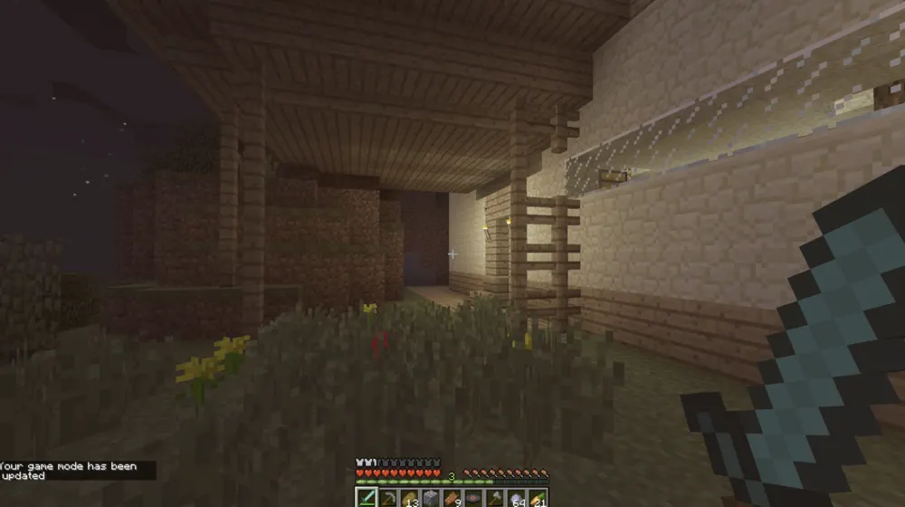
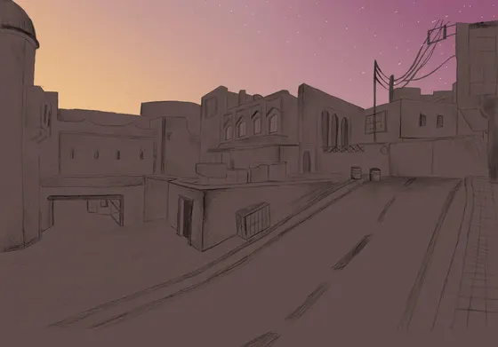
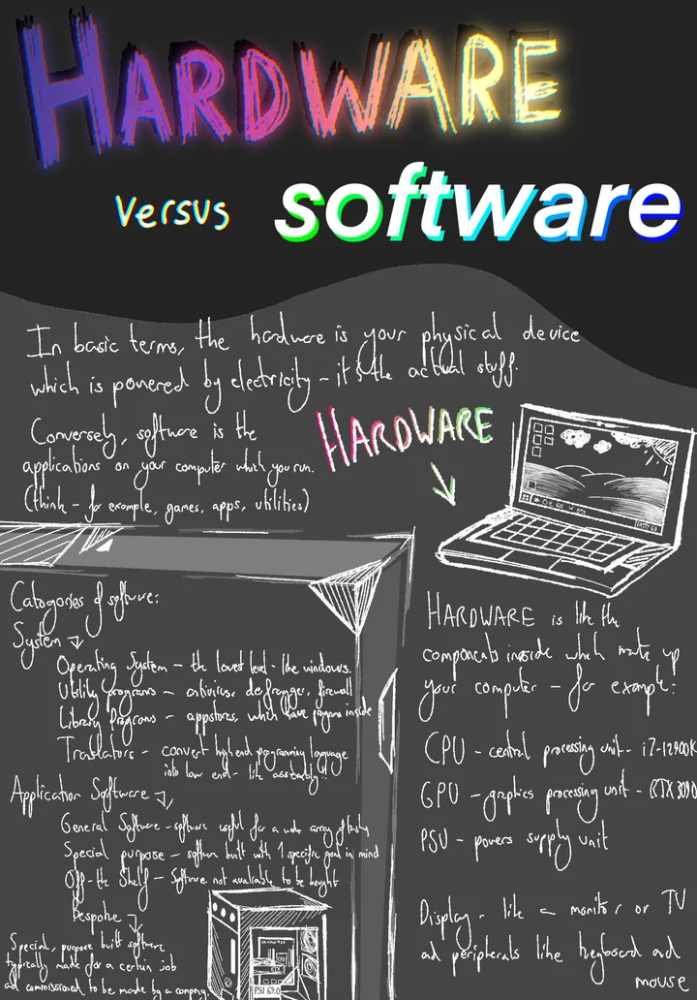
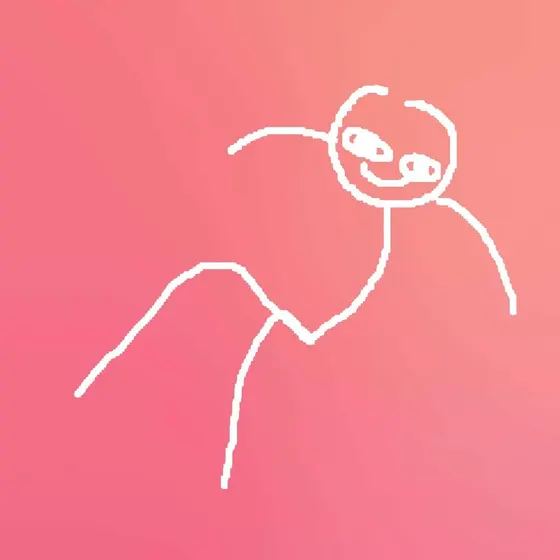
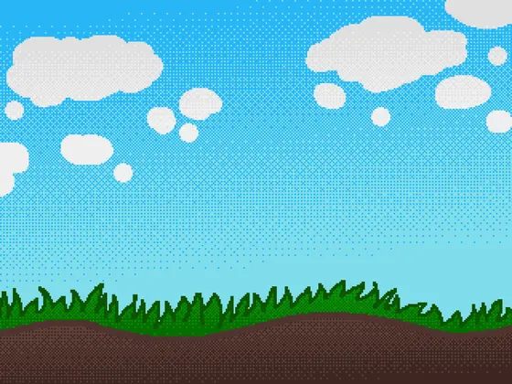
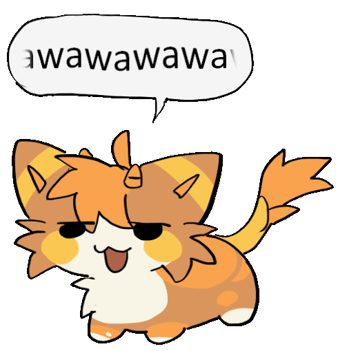

issue 01september 2026free · take one
milo tek
a zine about what I've built
in this issue
issue 01september 2026free · take one
a zine about what I've built
in this issue
hello

Hiya, I'm Milo. 19, London, software engineer, semi-professionally.
By day I'm an apprentice at Google working on Search for mobile. By night I write NixOS config, make games with friends, and draw stick men with far more confidence than skill.
This site is a zine. Twelve pages, three sheets of A5 folded in half, two staples. Underneath it's plain HTML, but I wanted something that looks like it was photocopied at 2am and left on a pub table for you to find.
Have a flick through. Projects start on page 4, the blog's on page 9, and the back page has the buttons.
Photocopied with care.
the day job
Software Engineer (Apprentice) at Google, London. Google Search, for mobile.
More specifically the Google Search App, on the backend and infrastructure side. Which is to say: google.com. Lol.
Things I've worked on so far:
Before that: the Makers Academy bootcamp in 2025 (Flask, Java, Postgres, a lot of pairing), A levels at Hills Road in Cambridge, and a couple of years tutoring GCSE Computer Science one to one.
The CV has the boring version.

projects
Software, hardware and games, biggest first. Hover the pictures for colour.
mobile app · unreleased · 2024 to now


A study and productivity app for GCSE and sixth-form students: focus timer, daily goals, screen-time summaries, study groups. React Native and TypeScript on the front, Firebase behind it, one codebase for iOS, Android and web. Started life as my A level Computer Science NEA, which is why it sat gated behind results day. Release date is "when it's good".
hardware · delivered · 2024

A fully automated pet feeder built to my neighbours' spec, which made the requirements meetings very short. Raspberry Pi driving a servo, touchscreen on the front, USB-C for power, ABS 3D-printed shell with an oak lid because it lives in a kitchen. The design document (client interviews, cardboard prototypes, evaluation) is public. It's long.
nixos · ongoing

My NixOS flake. Hyprland, Stylix theming, secrets in sops, modules written as though a stranger will enable them even though none will. It's where this site's palette and fonts come from, and where most of my commits go.
unity · pixeljam studios · 2026

Fragsurf ported to Unity 2022 with Linux editor support: a modernised Source engine for surf and bhop. I fixed the Linux build, then landed CS:GO-style recoil and spread, view models and weapon sounds, and bullet penetration. A bullet carries a depth budget in metres of concrete and spends it on every wall it crosses, so one number decides both whether a wall can be beaten and whether the shot was worth taking.
projects · games and shaders


godot · extended project qualification
The official title is "An accessible platforming and exploration themed video game", which tells you a teacher marked it. Six months of weekends in Godot, GDScript and C#, every mechanic put through a user feedback loop before it stayed in.

dotnet · college
Battleships, Tetris and Blackjack: a text game, a terminal GUI and a WinForms app, each one a step up. Comes with a 14 page written evaluation, because it was coursework and I was thorough.
classifieds
AirBnB clone in Flask with Basecoat UI, test-driven, built at Makers. Users list spaces, request bookings, manage reservations.
Third-party matchmaking for CS2 wingman on de_lake, because lake deserves better. MatchZy and Agones underneath.
A habit tracker that draws a GitHub-style grid for a wall-mounted kiosk. The repo description says "shitty" and I stand by it.
StepMania modcharts for NotITG, made to learn Lua and GLSL. I don't own a DDR pad.
Left 4 Dead 2 VR fork with MSAA, analogue movement and a fix for distorted rendering on PSVR2. The original author is gone, so someone had to.
Survival, co-op, horror, roguelike. A silly for-fun project that ended up with far more systems than it should have. Code's closed; the useful bits get shared through Pixeljam Studios.
Autoexecs and configs for CS2, L4D2 and friends. Sensible keybinds, opinionated yet based.
Facebook clone built as a team at Makers: Spring Boot, Maven, Thymeleaf, Bootstrap, Auth0. The whole enterprise starter pack.
A module that makes objects play material-specific impact sounds, volume scaled by how hard they hit. Ships with the Source engine sound set.
Python with Lua's end keyword bolted on. Nobody asked. I did it anyway.
Small fixes for websites that refused to fix themselves: Reddit's sign-up nag, a Tetr.io mirror, a GitHub homepage redirect.
art







wawawa.gif, found on my file server. Fairly sure I didn't draw it. Holding the spot until I do.
now
Updated 4 September 2026.
uses
blog
Ten AI agents, one brief, and the one that decided my website should be a photocopied zine.
One post so far, about this site. Posts are Markdown files in a folder; the feed is real.
contact
Email is best. I do read it.
back page · buttons
link back:<a href="https://furfag.lol/wst3/"><img src="https://furfag.lol/wst3/assets/buttons/milotek.png" alt="milo tek" width="88" height="31"></a>
colophon
Hand-folded HTML and one stylesheet, no JavaScript. Content lives in a folder of TOML and Markdown files and a short Python script staples it together, page numbers included.
Type: Montserrat for the shouting, Source Sans 3 for the reading, MesloLGS Nerd Font Mono for anything that looks typed. All three are the fonts my desktop uses, subsetted out of the same Nix packages.
Colours: Catppuccin Mocha, accent #ffbdbd, straight out of pixeljam.nix. The pink on the pictures is a CSS impression of one-colour riso printing. Hover for the originals.
Printed in London on GitHub Pages. Take one, it's free.
© Milo Tekchandani 2024 to 2026. No cookies, no analytics, one staple short of a magazine.
{kind=link}
{kind=link}
{kind=link}
{kind=link}
{kind=link}
{kind=link}
{kind=link}
{kind=link}